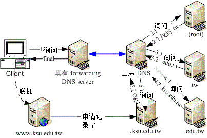

19.3 DNS 服务器的软件、种类与 cache only DNS 服务器设定
谈完了一些基础概念后，接下来让我们来聊一聊，那如何设定好 DNS 服务器啊？这当然就得由软件安装谈起啦！ 在这个小节，我们先不要谈 DNS 记录的正反解咚咚，只讲到 hint 这个 . (root) 的 zone，谈一谈最简单的仅有快取的 DNS 服务器 (Caching only DNS server) 吧！
19.3.1 架设 DNS 所需要的软件
终于废话都说完了！相信你大概也有点累的吧？鸟哥是蛮累的啦，因为手臂、肩颈酸痛的毛病颇严重....咦！讲这个干嘛？ @_@ 好啦，我们终于要来安装 DNS 所需要的软件了！还记得前面提过的，我们要使用的 DNS 软件就是使用柏克莱大学发展出来的 BIND (Berkeley Internet Name Domain, BIND) 这个啦！那么怎么知道你安装了没？不就是 rpm 与 yum 吗？自己查查看。
[root@www ~]# rpm -qa | grep '^bind'
bind-libs-9.7.0-5.P2.el6_0.1.x86_64 <==给 bind 与相关指令使用的函式库
bind-utils-9.7.0-5.P2.el6_0.1.x86_64 <==这个是客户端搜寻主机名的相关指令
bind-9.7.0-5.P2.el6_0.1.x86_64 <==就是 bind 主程序所需软件
bind-chroot-9.7.0-5.P2.el6_0.1.x86_64 <==将 bind 主程序关在家里面！
上面比较重要的是那个『 bind-chroot 』啦！所谓的 chroot 代表的是『 change to root(根目录) 』的意思，root 代表的是根目录。早期的 bind 默认将程序启动在 /var/named 当中，但是该程序可以在根目录下的其他目录到处转移，因此若 bind 的程序有问题时，则该程序会造成整个系统的危害。为避免这个问题， 所以我们将某个目录指定为 bind 程序的根目录，由于已经是根目录，所以 bind 便不能离开该目录！所以若该程序被攻击，了不起也是在某个特定目录底下搞破坏而已。 CentOS 6.x 默认将 bind 锁在 /var/named/chroot 目录中喔！
我们主程序是由 bind, bind-chroot 所提供，那前一小节提到的，每部 DNS 服务器都要有的 . (root) 这个 zone file 在哪里？它也是由 bind 所提供的喔！ (CentOS 4.x, 5.x 所提供的 caching-nameserver 软件并不存在 CentOS 6.x 当中了喔！已经被涵盖于 bind 软件内！)
19.3.2 BIND 的默认路径设定与 chroot
要架设好 BIND 需要什么设定数据呢？基本上有两个主要的数据要处理：
- BIND 本身的配置文件：主要规范主机的设定、zone file 的所在、权限的设定等；
- 正反解数据库档案 (zone file)：记录主机名与 IP 对应的等。
BIND 的配置文件为 /etc/named.conf，在这个档案里面可以规范 zone file 的完整檔名喔！ 也就是说，你的 zone file 其实是由 /etc/named.conf 所指定的，所以 zone file 档名可以随便取啦！ 只要 /etc/named.conf 内规范为正确即可。一般来说， CentOS 6.x 的默认目录是这样的：
- /etc/named.conf ：这就是我们的主配置文件啦！
- /etc/sysconfig/named ：是否启动 chroot 及额外的参数，就由这个档案控制；
- /var/named/ ：数据库档案默认放置在这个目录
/var/run/named ：named 这支程序执行时默认放置 pid-file 在此目录内。
/etc/sysconfig/named 与 chroot 环境
不过，为了系统的安全性考虑，一般来说目前各主要 distributions 都已经自动的将你的 bind 相关程序给他 chroot 了！ 那你如何知道你 chroot 所指定的目录在哪里呢？其实是记录在 /etc/sysconfig/named 里面啦！你可以先查阅一下：
[root@www ~]# cat /etc/sysconfig/named
ROOTDIR=/var/named/chroot
事实上该档案内较有意义的就只有上面这一行，意思是说：『我要将 named 给他 chroot ，并且变更的根目录为 /var/named/chroot 』喔！由于根目录已经被变更到 /var/named/chroot 了，但 bind 的相关程序是需要 /etc, /var/named, /var/run ...等目录的，所以实际上咱们 bind 的相关程序所需要的所有数据会是在：
- /var/named/chroot/etc/named.conf
- /var/named/chroot/var/named/zone_file1
- /var/named/chroot/var/named/zone_file.....
- /var/named/chroot/var/run/named/...
哇！真是好麻烦～不过，不要太担心！因为新版本的 CentOS 6.x 已经将 chroot 所需要使用到的目录，透过 mount --bind 的功能进行目录链接了 (参考 /etc/init.d/named 内容)，举例来说，我们需要的 /var/named 在启动脚本中透过 mount --bind /var/named /var/named/chroot/var/named 进行目录绑定啰！所以在 CentOS 6.x 当中，你根本无须切换至 /var/named/chroot/ 了！使用正规的目录即可喔！就是这样简单！^_^
Tips: 事实上， /etc/sysconfig/named 是由 /etc/init.d/named 启动时所读入的，所以你也可以直接修改 /etc/init.d/named 这个 script 哩！

19.3.3 单纯的 cache-only DNS 服务器与 forwarding 功能
在下一小节开始介绍正、反解 zone 的数据设定之前，在这个小节当中，我们先来谈一个单纯修改配置文件，而不必设计 zone file 的环境，那就是不具有自己正反解 zone 的仅进行快取的 DNS 服务器。
- 什么是 cache-only 与 forwarding DNS 服务器呢？
有个只需要 . 这个 zone file 的简单 DNS 服务器，我们称这种没有自己公开的 DNS 数据库的服务器为 cache-only (仅快取) DNS server！顾名思义，这个 DNS server 只有快取搜寻结果的功能，也就是说，他本身并没有主机名与 IP 正反解的配置文件，完全是由对外的查询来提供他的数据源！
那如果连 . 都不想要呢？那就得要指定一个上层 DNS 服务器作为你的 forwarding (转递) 目标，将原本自己要往 . 查询的任务，丢给上层 DNS 服务器去烦恼即可。 如此一来，我们这部具有 forwarding 功能的 DNS 服务器，甚至连 . 都不需要了！因为 . 有记录在上层 DNS 上头了嘛！
如同刚刚提到的，cache only 的 DNS 并不存在数据库 (其实还是存在 . 这个 root 领域的 zone file)， 因此不论是谁来查询数据，这部 DNS 一律开始从自己的快取以及 . 找起，整个流程与图 19.1-4 相同。那如果具有 forwarding 功能呢？果真如此，那即使你的 DNS 具有 . 这个 zone file，这部 DNS 还是会将查询权『委请』上层 DNS 查询的，这部 DNS 服务器当场变成客户端啦！查询流程会变这样喔：
 图 19.3-1、具有 forwarding 功能的 DNS 服务器查询方式
观察上图的查询方向，你会发现到，具有 forwarding 机制时，查询权会委请上层 DNS 服务器来处理，所以根本也不需要 . 这个位置所在的 zone 啦。一般来说，如果你的环境需要架设一个 cache-only 的 DNS 服务器时，其实可以直接加上 forwarding 的机制，让查询权指向上层或者是流量较大的上层 DNS 服务器即可。那既然 cache only 的服务器并没有数据库， forwarding 机制甚至不需要 . 的 zone ，那干嘛还得要架设这样的 DNS 呢？是有理由的啦！
- 什么时候有架设 cache-only DNS 的需求？
在某些公司行号里头，为了预防员工利用公司的网络资源作自己的事情，所以都会针对 Internet 的联机作比较严格的限制。当然啦，连 port 53 这个 DNS 会用到的 port 也可能会被挡在防火墙之外的～这个时候， 你可以在『防火墙的那部机器上面，加装一个 cache-only 的 DNS 服务！』
这是什么意思呢？很简单啊！就是你自己利用自己的防火墙主机上的 DNS 服务去帮你的 Client 端解译 hostname <--> IP 啰！因为防火墙主机可以设定放行自己的 DNS 功能，而 Client 端就设定该防火墙 IP 为 DNS 服务器的 IP 即可！哈哈！这样就可以取得主机名与 IP 的转译啦！所以，通常架设 cache only DNS 服务器大都是为了系统安全啰。
- 实际设定 cache-only DNS server
那如何在你的 Linux 主机上架设一个 cache-only 的 DNS 服务器呢？其实真的很简单的啦！因为不需要设定正反解的 zone (只需要 . 的 zone 支持即可)，所以只要设定一个档案 (就是 named.conf 主配置文件) 即可！真是快乐得不得了吶！ 另外，cache-only 只要加上个 forwarders 的设定即可指定 forwarding 的数据，所以底下我们将设定具有 forwarding 的 cache-only DNS 服务器吧！
编辑主要配置文件： /etc/named.conf
虽然我们具有 chroot 的环境，不过由于 CentOS 6.x 已经透过启动脚本帮我们进行档案与目录的挂载链接，所以请你直接修改 /etc/named.conf 即可呦！不要再去 /var/named/chroot/etc/named.conf 修改啦！ 在这个档案中，主要是定义跟服务器环境有关的设定，以及各个 zone 的领域及数据库所在文件名。 在鸟哥的这个案例当中，因为使用了 forwarding 的机制，所以这个 cache-only DNS 服务器并没有 zone (连 . 都没有)，所以我们只要设定好跟服务器有关的设定即可。设定这个档案的时候请注意：
- 批注数据是放置在两条斜线『 // 』后面接的数据
- 每个段落之后都需要以分号『 ; 』来做为结尾！ 鸟哥将这个档案再简化如下的样式：
[root@www ~]# cp /etc/named.conf /etc/named.conf.raw [root@www ~]# vim /etc/named.conf // 在预设的情况下，这个档案会去读取 /etc/named.rfc1912.zones 这个领域定义档 // 所以请记得要修改成底下的样式啊！ options { listen-on port 53 { any; }; //可不设定，代表全部接受 directory "/var/named"; //数据库默认放置的目录所在 dump-file "/var/named/data/cache_dump.db"; //一些统计信息 statistics-file "/var/named/data/named_stats.txt"; memstatistics-file "/var/named/data/named_mem_stats.txt"; allow-query { any; }; //可不设定，代表全部接受 recursion yes; //将自己视为客户端的一种查询模式 forward only; //可暂时不设定 forwarders { //是重点！ 168.95.1.1; //先用中华电信的 DNS 当上层 139.175.10.20; //再用 seednet 当上层 }; }; //最终记得要结尾符号！鸟哥将大部分的数据都予以删除，只将少部分保留的数据加以小部分的修订而已。在 named.conf 的结构中，与服务器环境有关的是由 options 这个项目内容设定的，因为 options 里面还有很多子参数， 所以就以大括号 { } 包起来啰。至于 options 内的子参数在上面提到的较重要的项目简单叙述如下：
listen-on port 53 { any; }; 监听在这部主机系统上面的哪个网络接口。预设是监听在 localhost，亦即只有本机可以对 DNS 服务进行查询，那当然是很不合理啊！ 所以这里要将大括号内的数据改写成 any。记得，因为可以监听多个接口，因此 any 后面得要加上分号才算结束喔！ 另外，这个项目如果忘记写也没有关系，因为默认是对整个主机系统的所有接口进行监听的。
directory "/var/named"; 意思是说，如果此档案底下有规范到正、反解的 zone file 档名时，该档名预设应该放置在哪个目录底下的意思。预设放置到 /var/named/ 底下。由于 chroot 的关系，最终这些数据库档案会被主动链接到 /var/named/chroot/var/named/ 这个目录。
dump-file, statistics-file, memstatistics-file 与 named 这个服务有关的许多统计信息，如果想要输出成为档案的话，预设的档名就如上所述。鸟哥自己很少看这些统计资料， 所以，这三个设定值写不写应该都是没有关系的。
allow-query { any; }; 这个是针对客户端的设定，到底谁可以对我的 DNS 服务提出查询请求的意思。原本的档案内容预设是针对 localhost 开放而已， 我们这里改成对所有的用户开放 (当然啦，防火墙也得放行才行)。不过，预设 DNS 就是对所有用户放行，所以这个设定值也可以不用写。
forward only ; 这个设定可以让你的 DNS 服务器仅进行 forward，即使有 . 这个 zone file 的设定，也不会使用 . 的资料， 只会将查询权交给上层 DNS 服务器而已，是 cache only DNS 最常见的设定了！
forwarders { 168.95.1.1; 139.175.10.20; } ; 既然有 forward only，那么到底要对哪部上层 DNS 服务器进行转递呢？那就是 forwarders (不要忘记那个 s) 设定值的重要性了！由于担心上层 DNS 服务器也可能会挂点，因此可以设定多部上层 DNS 服务器喔！每一个 forwarder 服务器的 IP 都需要有『 ; 』来做为结尾！ 很简单吧！至于更多的参数我们会在后续篇幅当中慢慢介绍的。这样就已经设定完成了最简单的 cache only DNS server 了！
启动 named 并观察服务的埠口
启动总不会忘记吧？赶快去启动一下吧！同时启动完毕之后，观察一下由 named 所开启的埠口，看看到底哪些埠口会被 DNS 用到的！
# 1\. 启动一下 DNS 这玩意儿！ [root@www ~]# /etc/init.d/named start Starting named: [ OK ] [root@www ~]# chkconfig named on # 2\. 到底用了多少埠口呢？ [root@www ~]# netstat -utlnp | grep named Proto Recv-Q Send-Q Local Address Foreign Address State PID/Program name tcp 0 0 192.168.100.254:53 0.0.0.0:* LISTEN 3140/named tcp 0 0 192.168.1.100:53 0.0.0.0:* LISTEN 3140/named tcp 0 0 127.0.0.1:53 0.0.0.0:* LISTEN 3140/named tcp 0 0 127.0.0.1:953 0.0.0.0:* LISTEN 3140/named tcp 0 0 ::1:953 :::* LISTEN 3140/named udp 0 0 192.168.100.254:53 0.0.0.0:* 3140/named udp 0 0 192.168.1.100:53 0.0.0.0:* 3140/named udp 0 0 127.0.0.1:53 0.0.0.0:* 3140/named我们知道 DNS 会同时启用 UDP/TCP 的 port 53，而且是针对所有接口，因此上面的数据并没有什么特异的部分。不过，怎么会有 port 953 且仅针对本机来监听呢？其实那是 named 的远程控制功能，称为远程名称解析服务控制功能 (remote name daemon control, rndc)。预设的情况下，仅有本机可以针对 rndc 来控制。我们会在后续的章节再来探讨这个 rndc 啦，目前我们只要知道 UDP/TCP port 53 有启动即可。
检查 /var/log/messages 的内容讯息 (极重要！)
named 这个服务的记录文件就直接给他放置在 /var/log/messages 里面啦，所以来看看里面的几行登录信息吧！
[root@www ~]# tail -n 30 /var/log/messages | grep named Aug 4 14:57:09 www named[3140]: starting BIND 9.7.0-P2-RedHat-9.7.0-5.P2.el6_0.1 -u named -t /var/named/chroot <==说明的是 chroot 在哪个目录下！ Aug 4 14:57:09 www named[3140]: adjusted limit on open files from 1024 to 1048576 Aug 4 14:57:09 www named[3140]: found 1 CPU, using 1 worker thread Aug 4 14:57:09 www named[3140]: using up to 4096 sockets Aug 4 14:57:09 www named[3140]: loading configuration from '/etc/named.conf' Aug 4 14:57:09 www named[3140]: using default UDP/IPv4 port range: [1024, 65535] Aug 4 14:57:09 www named[3140]: using default UDP/IPv6 port range: [1024, 65535] Aug 4 14:57:09 www named[3140]: listening on IPv4 interface lo, 127.0.0.1#53 Aug 4 14:57:09 www named[3140]: listening on IPv4 interface eth0, 192.168.1.100#53 Aug 4 14:57:09 www named[3140]: listening on IPv4 interface eth1, 192.168.100.254#53 Aug 4 14:57:09 www named[3140]: generating session key for dynamic DNS Aug 4 14:57:09 www named[3140]: command channel listening on 127.0.0.1#953 Aug 4 14:57:09 www named[3140]: command channel listening on ::1#953 Aug 4 14:57:09 www named[3140]: the working directory is not writable Aug 4 14:57:09 www named[3140]: running上面最重要的是第一行出现的『-t ...』那个项目指出你的 chroot 目录啰。另外，上面表格中特殊字体的部分，有写到读取 /etc/named.conf，代表可以顺利的加载 /var/named/etc/named.conf 的意思。如果上面有出现冒号后面接数字 (:10)， 那就代表某个档案内的第十行有问题的意思，届时再进入处理即可。要注意的是，即使 port 53 有启动，但有可能 DNS 服务是错误的，此时这个登录档就显的非常重要！每次重新启动 DNS 后，请务必查阅一下这个档案的内容！！
Tips: 如果你在 /var/log/messages 里面一直看到这样的错误信息： couldn't add command channel 127.0.0.1#953: not found 那表示你还必需要加入 rndc key ，请参考本章后面的 利用 RNDC 指令管理 DNS 服务器 的介绍，将他加入你的 named.conf 中！
测试：
如果你的 DNS 伺服器具有连上因特网的功能，那么透过『 dig www.google.com @127.0.0.1 』这个基本指令执行看看， 如果有找到 google 的 IP ，并且输出数据的最底下显示『 SERVER: 127.0.0.1#53(127.0.0.1) 』的字样， 那就代表应该是成功啦！其他更详细的测试请参考：19.2 小节的内容
特别说明：Forwarders 的好处与问题分析
关于 forwarder 的好处与坏处，其实有很多种的意见！大致的意见可分为这两派：
利用 Forwarder 的功能来增进效能的理论：
这些朋友们认为，当很多的下层 DNS 服务器都使用 forwarder 时，那么那个被设定为 forwarder 的主机，由于会记录很多的查询信息记录 (请参考图 19.1-4 的说明)，因此，对于那些下层的 DNS 服务器而言，查询速度会增快很多，亦即会节省很多的查询时间！因为 forwarder 服务器里面有较多的快取记录了， 所以包括 forwarder 本身，以及所有向这部 forwarder 要求数据的 DNS 服务器，都能够减少往 . 查询的机会， 因此速度当然增加。
利用 Forwarder 反而会使整体的效能降低：
但是另外一派则持相反的见解！这是因为当主 DNS 本身的『业务量』就很繁忙的时候，那么你的 cache only DNS 服务器还向他要求数据，因为他原本的数据传输量就太大了，带宽方面可能负荷不量，而太多的下层 DNS 还向他要求数据，所以他的查询速度会变慢！因为查询速度变慢了，而你的 cache only server 又是向他提出要求的，所以自然两边的查询速度就会同步下降！
很多种说法啦！鸟哥本人也觉得很有趣哩！只是不知道哪一派较正确就是了，不过可以知道的是，如果上层的 DNS 速度很快的话，那么他被设定为 forwarder 时，或许真的可以增加不少效能哩！